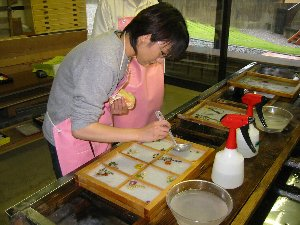
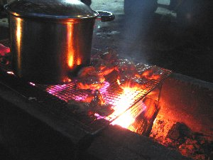
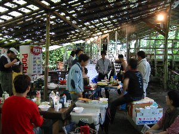
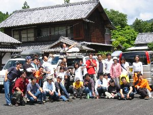

コラボキャンプ | 2003年5月31日〜6月1日 |
|---|---|
 今、紙の元を入れてます |  のびちゃんの作品 右上の「の」字に注目 |
| たすまんず初の他グループ交流会、名古屋の異人種交流会「月酔う会」とコラボキャンプを実施。 ま、早い話宴会しよ〜ってノリです。（え、違う？） なんせ30名を越す大宴会・・・・もといキャンプでしたので、準備をしてくださった皆様は大変だったと思います。 とりあえず31日は、のび太、ハチ、べっしーでアクティ森へ。天気が雨なので（台風4号）紙すき体験をすることに。 紙すきは初めてですが、別に難しくありませんでした。って言うか指導員がほとんど準備してくれるので、紙すきの中に入れる押し花の配置（いわゆる感性の問題）だけ。 ハチさんははがき、私（べっしー）はランプシェード、のびちゃんは額縁に飾るアート。写真でのびちゃんの作品がご覧頂けるかと思いますが、右上の「の」の字がのびちゃんらしいですね。 アクティ森 http://www.actymori.jp/ | |
|  押し花の上に薄く紙の元を！ |  夕食の準備！鶏を焼いてます |
| 夕方、「石上の里」へ。そこで月酔う会のメンバーとクライミングをしてきたキッカー班と合流。夕食の準備に入ります。 夕食のメニューは多彩かつボリューム満点！アル兄は魚を焼きながらビール飲んでました〜（私もだけど） たすまんずからは、パスタ2種、サラダ、鶏肉の焼肉、ポトフ、アジの開き、キッカーのスモークチーズ、ベーコン、桜エビ唐揚げ みんなすごい盛り上がりを見せて、お酒も沢山あったのにほとんど無くなりました。 月酔う会の面々も楽しい人たちばかりでしたね。笑わかしてもらいました。 7時くらいから飲んでいたと思うけど、いつのまにか夜12時。知らぬ間に何人かはご就寝の様子。私も就寝(*_*) 次の日、既に朝食の準備が出来たところで、呼ばれました〜何にもしないでスミマセン〜〜〜〜〜美味しかったです。 本当なら浜北森林公園内を散歩と思っていたのですが、朝から雨模様。 なんだかんだで、結局お風呂入って解散でしたが、非常に楽しかったです〜 また、やりたいな〜 | |
|  朝食の風景 なんかすごい所でやってたって感じ |  酒豪、もとい集合写真！ |
| 今回、宴会がメインなのに、宴会に熱中するあまり、宴会の写真を一枚も撮っていません〜 しかも、たすまんずメンバーがほとんどで、月酔う会の人たちが、あまり写ってなかった・・・・・ スンマセン〜〜〜 | |